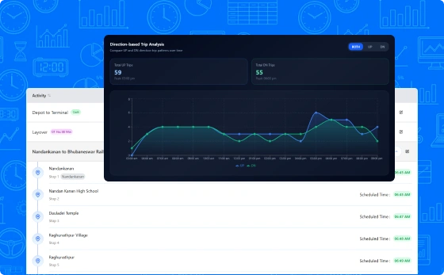
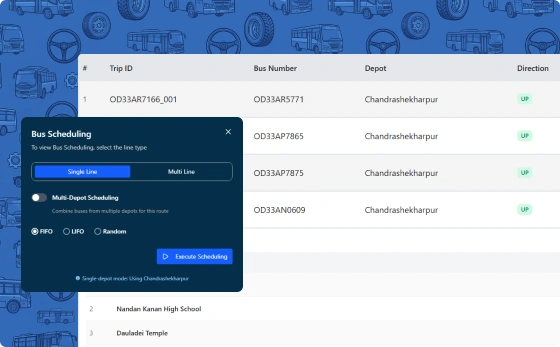
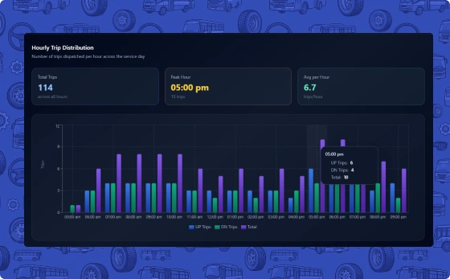

Build, adjust, and publish timetables quickly while keeping every trip aligned with operational goals.

Generate complete daily service schedules across the network in one workflow.

Coordinate schedules across multiple depots and interconnected routes.

Adjust schedules quickly when real-world conditions change.
See how PUBBS Transit brings planning, scheduling, dispatch, fleet management, and passenger services together in one connected platform.
Book a Demo